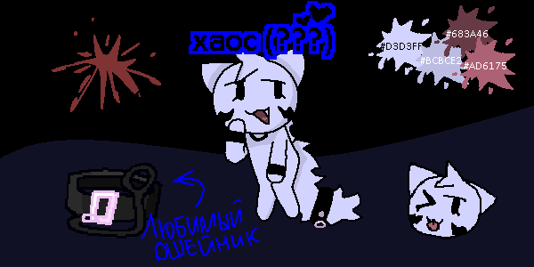

Нилл (???)

референс альт-хаос
вид :: кошка (???)
ДР :: 08.11.2009 (???)
пол :: женский (???)
рост :: 140 (???)
вес :: 26 (???)
я не знаю тебя, но уже люблю тебя!! :3
инфо
альт-эго хаос.
как персонаж
альт-сторона хаос имеет похотливый характер. она любит абсолютно всех без исключения.
альт-хаос очень сильно зависит от похоти. она не может избавиться от этого.
внешность
альт-хаос почти никак не отличается от своей обычной версии.